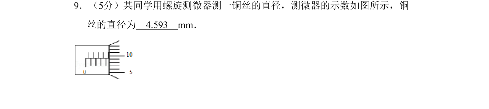
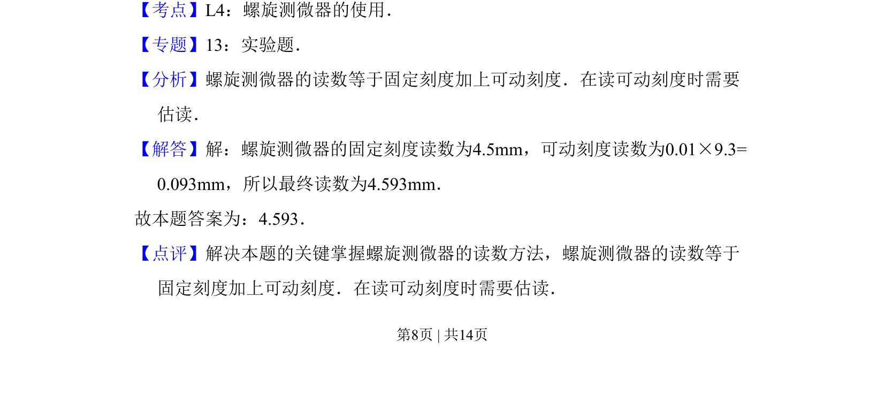

2008-全国Ⅱ-09
考点：螺旋测微器读数 读数方法 实验操作
题面

摘要
考查螺旋测微器的读数方法，包括固定刻度与可动刻度的读取及估读。
关联考点
答案与解析


📄 原 PDF 第 8 页：
素材/真题/吉林/2008-2024·（吉林）物理高考真题/2008年高考物理试卷（全国卷Ⅱ）（解析卷）.pdf
题干文本
9．（5分）某同学用螺旋测微器测一铜丝的直径，测微器的示数如图所示，铜 丝的直径为 4.593 mm．
解析文本
【考点】L4：螺旋测微器的使用．菁优网版权所有 【专题】13：实验题． 【分析】螺旋测微器的读数等于固定刻度加上可动刻度．在读可动刻度时需要 估读． 【解答】解：螺旋测微器的固定刻度读数为4.5mm，可动刻度读数为0.01×9.3= 0.093mm，所以最终读数为4.593mm． 故本题答案为：4.593． 【点评】解决本题的关键掌握螺旋测微器的读数方法，螺旋测微器的读数等于 固定刻度加上可动刻度．在读可动刻度时需要估读．